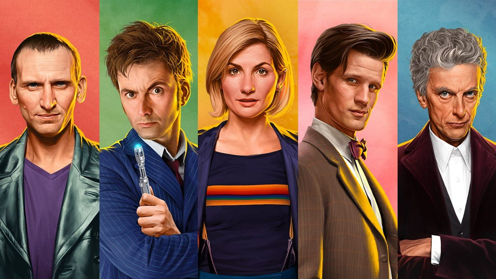

Сериал "Доктор Кто" (2005-2022)
Весь отснятый к настоящему моменту материал «Доктора Кто» делится на три части.
- Олдскул (Классика) - с 1963 по 1989
- Ньюскул (Новая эра) - с 2005 по 2022
- Перезапуск - с 2023 года по настоящее время
В рамках этой странички мы рассмотрим именно
ньюскул.
Доктора ньюскула

Актёры игравшие Доктора
| Доктор |
Сезоны |
Годы |
Актёр |
| девятый Доктор |
1 |
2005 |
Кристофер Эклстон |
| десятый Доктор |
2-4 |
2005-2010 |
Девид Теннант |
| одиннадцатый Доктор |
5-7 |
2010-2013 |
Мэтт Смит |
| двенадцатый Доктор |
8-10 |
2014-2017 |
Питер Капальди |
| тринадцатый Доктор |
11-13 |
2018-2022 |
Джоди Уиттакер |
Ccылки
У сериала есть свой ютуб канал, на ктором выходят не только новости, но и другой развлекательный контент по Доктору Кто.
Вот ссылка на их канал.
Цитаты из сериала
"Я буквально не знаю, кто я такой. Это не проверено. Я смешной? Я саркастичный? Сексапильный?
Живой и душевный? Правша? Левша? Азартный игрок? Борец? Трус? Предатель? Лжец? Неврастеник?
Я думаю, судя по всему, рот у меня точно есть."
© 10 Доктор
"— Чаю! Но самого крепкого! Пакетик не вынимать!"
© 11 Доктор
Обратная связь